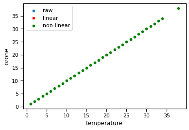
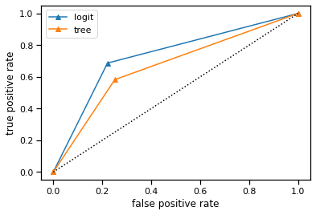

#Last Lecture!
NOTE: This is the code I used in class. So, its not commented, but maybe you can see learn something from it!¶
Announcements:
CAPEs due: Monday, June 7 at 8:00am
If >50% submit, everyone gets a bonus points
If >75% submit, everyone gets 2 bonus points
Discussion board 4
Final project is due Tuesday June 8th at midnight
Any 2 analysis techniques
Descriptive stats in analysis section -> mode for categorical
Topics:
Review!
import seaborn as sns
import matplotlib.pyplot as plt
import numpy as np
import pandas as pd
from sklearn.model_selection import train_test_split
from sklearn.linear_model import LogisticRegression
from sklearn import model_selection
from sklearn.linear_model import LinearRegression
from sklearn.preprocessing import PolynomialFeatures
from sklearn import tree
from sklearn import metrics
from sklearn.naive_bayes import GaussianNB
from sklearn.neighbors import KNeighborsClassifier
from sklearn.svm import SVC
import plotly.express as px
from sklearn.preprocessing import StandardScaler
from sklearn.decomposition import PCA
from sklearn.cluster import KMeans
---------------------------------------------------------------------------
ModuleNotFoundError Traceback (most recent call last)
<ipython-input-1-02148f2f2bdc> in <module>
13 from sklearn.neighbors import KNeighborsClassifier
14 from sklearn.svm import SVC
---> 15 import plotly.express as px
16 from sklearn.preprocessing import StandardScaler
17 from sklearn.decomposition import PCA
ModuleNotFoundError: No module named 'plotly'
lets get some data
data = pd.read_csv('https://web.stanford.edu/~hastie/ElemStatLearn/datasets/LAozone.data')
data.head()
| ozone | vh | wind | humidity | temp | ibh | dpg | ibt | vis | doy | |
|---|---|---|---|---|---|---|---|---|---|---|
| 0 | 3 | 5710 | 4 | 28 | 40 | 2693 | -25 | 87 | 250 | 3 |
| 1 | 5 | 5700 | 3 | 37 | 45 | 590 | -24 | 128 | 100 | 4 |
| 2 | 5 | 5760 | 3 | 51 | 54 | 1450 | 25 | 139 | 60 | 5 |
| 3 | 6 | 5720 | 4 | 69 | 35 | 1568 | 15 | 121 | 60 | 6 |
| 4 | 4 | 5790 | 6 | 19 | 45 | 2631 | -33 | 123 | 100 | 7 |
sns.pairplot(data)
<seaborn.axisgrid.PairGrid at 0x7ff621048eb0>

data = pd.read_csv('https://raw.githubusercontent.com/stedy/Machine-Learning-with-R-datasets/master/credit.csv')
data.head()
| checking_balance | months_loan_duration | credit_history | purpose | amount | savings_balance | employment_length | installment_rate | personal_status | other_debtors | ... | property | age | installment_plan | housing | existing_credits | default | dependents | telephone | foreign_worker | job | |
|---|---|---|---|---|---|---|---|---|---|---|---|---|---|---|---|---|---|---|---|---|---|
| 0 | < 0 DM | 6 | critical | radio/tv | 1169 | unknown | > 7 yrs | 4 | single male | none | ... | real estate | 67 | none | own | 2 | 1 | 1 | yes | yes | skilled employee |
| 1 | 1 - 200 DM | 48 | repaid | radio/tv | 5951 | < 100 DM | 1 - 4 yrs | 2 | female | none | ... | real estate | 22 | none | own | 1 | 2 | 1 | none | yes | skilled employee |
| 2 | unknown | 12 | critical | education | 2096 | < 100 DM | 4 - 7 yrs | 2 | single male | none | ... | real estate | 49 | none | own | 1 | 1 | 2 | none | yes | unskilled resident |
| 3 | < 0 DM | 42 | repaid | furniture | 7882 | < 100 DM | 4 - 7 yrs | 2 | single male | guarantor | ... | building society savings | 45 | none | for free | 1 | 1 | 2 | none | yes | skilled employee |
| 4 | < 0 DM | 24 | delayed | car (new) | 4870 | < 100 DM | 1 - 4 yrs | 3 | single male | none | ... | unknown/none | 53 | none | for free | 2 | 2 | 2 | none | yes | skilled employee |
5 rows × 21 columns
sns.pairplot(data)
<seaborn.axisgrid.PairGrid at 0x7ff62363f340>

data = pd.read_csv('https://raw.githubusercontent.com/stedy/Machine-Learning-with-R-datasets/master/whitewines.csv')
sns.pairplot(data)
<seaborn.axisgrid.PairGrid at 0x7ff624be7bb0>

data.head()
| ozone | vh | wind | humidity | temp | ibh | dpg | ibt | vis | doy | |
|---|---|---|---|---|---|---|---|---|---|---|
| 0 | 3 | 5710 | 4 | 28 | 40 | 2693 | -25 | 87 | 250 | 3 |
| 1 | 5 | 5700 | 3 | 37 | 45 | 590 | -24 | 128 | 100 | 4 |
| 2 | 5 | 5760 | 3 | 51 | 54 | 1450 | 25 | 139 | 60 | 5 |
| 3 | 6 | 5720 | 4 | 69 | 35 | 1568 | 15 | 121 | 60 | 6 |
| 4 | 4 | 5790 | 6 | 19 | 45 | 2631 | -33 | 123 | 100 | 7 |
let’s try to predict ozone
sns.distplot(data['ozone'],bins=20)
/usr/local/lib/python3.7/dist-packages/seaborn/distributions.py:2557: FutureWarning:
`distplot` is a deprecated function and will be removed in a future version. Please adapt your code to use either `displot` (a figure-level function with similar flexibility) or `histplot` (an axes-level function for histograms).
<matplotlib.axes._subplots.AxesSubplot at 0x7f2f43c21050>
is this normally distributed?
data.columns
Index(['ozone', 'vh', 'wind', 'humidity', 'temp', 'ibh', 'dpg', 'ibt', 'vis',
'doy'],
dtype='object')
365-91
274
var = np.where((data['doy']>=91) & (data['doy']<=274),1,0)
data.insert(len(data.columns),'YearPoint2',var)
data.head()
| ozone | vh | wind | humidity | temp | ibh | dpg | ibt | vis | doy | YearPoint | YearPoint2 | |
|---|---|---|---|---|---|---|---|---|---|---|---|---|
| 0 | 3 | 5710 | 4 | 28 | 40 | 2693 | -25 | 87 | 250 | 3 | 0 | 0 |
| 1 | 5 | 5700 | 3 | 37 | 45 | 590 | -24 | 128 | 100 | 4 | 0 | 0 |
| 2 | 5 | 5760 | 3 | 51 | 54 | 1450 | 25 | 139 | 60 | 5 | 0 | 0 |
| 3 | 6 | 5720 | 4 | 69 | 35 | 1568 | 15 | 121 | 60 | 6 | 0 | 0 |
| 4 | 4 | 5790 | 6 | 19 | 45 | 2631 | -33 | 123 | 100 | 7 | 0 | 0 |
sns.jointplot(data['temp'],data['ozone'],hue=data['YearPoint2'])
/usr/local/lib/python3.7/dist-packages/seaborn/_decorators.py:43: FutureWarning:
Pass the following variables as keyword args: x, y. From version 0.12, the only valid positional argument will be `data`, and passing other arguments without an explicit keyword will result in an error or misinterpretation.
<seaborn.axisgrid.JointGrid at 0x7f2f43468d50>
sns.scatterplot(data['temp'],data['ozone'],hue=data['YearPoint'],alpha=.5)
plt.title('Cool Plot - give me extra credit')
plt.show()
/usr/local/lib/python3.7/dist-packages/seaborn/_decorators.py:43: FutureWarning:
Pass the following variables as keyword args: x, y. From version 0.12, the only valid positional argument will be `data`, and passing other arguments without an explicit keyword will result in an error or misinterpretation.
wind does not appear related to ozone
Temp does
data.isnull().any() # this uses isnull method and then the any method, which looks for tru
ozone False
vh False
wind False
humidity False
temp False
ibh False
dpg False
ibt False
vis False
doy False
dtype: bool
X = np.array(data['temp']).reshape(data.shape[0],1)
y = data['ozone']
sns.scatterplot(X[:,0],y)
/usr/local/lib/python3.7/dist-packages/seaborn/_decorators.py:43: FutureWarning:
Pass the following variables as keyword args: x, y. From version 0.12, the only valid positional argument will be `data`, and passing other arguments without an explicit keyword will result in an error or misinterpretation.
<matplotlib.axes._subplots.AxesSubplot at 0x7f2f42cad410>
data.corr()
| ozone | vh | wind | humidity | temp | ibh | dpg | ibt | vis | doy | YearPoint | YearPoint2 | |
|---|---|---|---|---|---|---|---|---|---|---|---|---|
| ozone | 1.000000 | 0.607344 | -0.013414 | 0.449224 | 0.780703 | -0.589534 | 0.214046 | 0.745578 | -0.440989 | 0.066200 | 0.105271 | 0.500509 |
| vh | 0.607344 | 1.000000 | -0.243664 | 0.074485 | 0.808059 | -0.504835 | -0.148071 | 0.852021 | -0.360080 | 0.337397 | 0.422373 | 0.234922 |
| wind | -0.013414 | -0.243664 | 1.000000 | 0.210293 | -0.032070 | 0.206596 | 0.335747 | -0.179517 | 0.147227 | -0.246444 | -0.186814 | 0.290605 |
| humidity | 0.449224 | 0.074485 | 0.210293 | 1.000000 | 0.340474 | -0.242328 | 0.647789 | 0.203648 | -0.401008 | 0.040703 | 0.095117 | 0.458901 |
| temp | 0.780703 | 0.808059 | -0.032070 | 0.340474 | 1.000000 | -0.532645 | 0.189242 | 0.864787 | -0.387721 | 0.238003 | 0.295371 | 0.548726 |
| ibh | -0.589534 | -0.504835 | 0.206596 | -0.242328 | -0.532645 | 1.000000 | 0.037078 | -0.776933 | 0.386686 | 0.043400 | 0.036845 | -0.179833 |
| dpg | 0.214046 | -0.148071 | 0.335747 | 0.647789 | 0.189242 | 0.037078 | 1.000000 | -0.095060 | -0.125855 | -0.154138 | -0.154573 | 0.632352 |
| ibt | 0.745578 | 0.852021 | -0.179517 | 0.203648 | 0.864787 | -0.776933 | -0.095060 | 1.000000 | -0.422372 | 0.219172 | 0.266752 | 0.317355 |
| vis | -0.440989 | -0.360080 | 0.147227 | -0.401008 | -0.387721 | 0.386686 | -0.125855 | -0.422372 | 1.000000 | -0.216976 | -0.199353 | -0.148152 |
| doy | 0.066200 | 0.337397 | -0.246444 | 0.040703 | 0.238003 | 0.043400 | -0.154138 | 0.219172 | -0.216976 | 1.000000 | 0.868494 | -0.019720 |
| YearPoint | 0.105271 | 0.422373 | -0.186814 | 0.095117 | 0.295371 | 0.036845 | -0.154573 | 0.266752 | -0.199353 | 0.868494 | 1.000000 | -0.036751 |
| YearPoint2 | 0.500509 | 0.234922 | 0.290605 | 0.458901 | 0.548726 | -0.179833 | 0.632352 | 0.317355 | -0.148152 | -0.019720 | -0.036751 | 1.000000 |
Can I predict the ozone based on temperature?
What kind of model should we use here?
model = LinearRegression()
kfold = model_selection.KFold(n_splits=5,shuffle=True,random_state=1)
results1 = model_selection.cross_val_score(model,X,y,cv=kfold)
ymodel1 = model_selection.cross_val_predict(model,X,y,cv=kfold)
print(results1.mean(),results1.std())
1.0 0.0
sns.scatterplot(ymodel1,ymodel1-y)
plt.xlabel('residuals')
/usr/local/lib/python3.7/dist-packages/seaborn/_decorators.py:43: FutureWarning:
Pass the following variables as keyword args: x, y. From version 0.12, the only valid positional argument will be `data`, and passing other arguments without an explicit keyword will result in an error or misinterpretation.
Text(0.5, 0, 'residuals')
p = PolynomialFeatures(2) # create the polynomial object we are interested in
X_p = p.fit_transform(X) # get the transformed features
model = LinearRegression()
kfold = model_selection.KFold(n_splits=5,shuffle=True,random_state=1)
results2 = model_selection.cross_val_score(model,X_p,y,cv=kfold)
ymodel2 = model_selection.cross_val_predict(model,X_p,y,cv=kfold)
print(results2.mean(),results2.std())
1.0 0.0
sns.scatterplot(ymodel2,ymodel2-y)
plt.xlabel('residuals')
/usr/local/lib/python3.7/dist-packages/seaborn/_decorators.py:43: FutureWarning:
Pass the following variables as keyword args: x, y. From version 0.12, the only valid positional argument will be `data`, and passing other arguments without an explicit keyword will result in an error or misinterpretation.
Text(0.5, 0, 'residuals')
sns.set_context('notebook')
sns.scatterplot(x= X[:,0],y =y,label='raw')
sns.scatterplot(x = X[:,0],y=ymodel1,color='r',label='linear')
sns.scatterplot(x = X[:,0],y= ymodel2,color='g',label='non-linear')
#sns.scatterplot(x = X[:,0],y= ymodel_whoa,color=[0,.5,1],label='non-linear')
plt.xlabel('temperature')
plt.legend()
plt.show()

We want to use cross validation to evaluate our prediction
Kfold is a good method
our data is ordered
data.head(20)
| ozone | vh | wind | humidity | temp | ibh | dpg | ibt | vis | doy | YearPoint | YearPoint2 | |
|---|---|---|---|---|---|---|---|---|---|---|---|---|
| 0 | 3 | 5710 | 4 | 28 | 40 | 2693 | -25 | 87 | 250 | 3 | 0 | 0 |
| 1 | 5 | 5700 | 3 | 37 | 45 | 590 | -24 | 128 | 100 | 4 | 0 | 0 |
| 2 | 5 | 5760 | 3 | 51 | 54 | 1450 | 25 | 139 | 60 | 5 | 0 | 0 |
| 3 | 6 | 5720 | 4 | 69 | 35 | 1568 | 15 | 121 | 60 | 6 | 0 | 0 |
| 4 | 4 | 5790 | 6 | 19 | 45 | 2631 | -33 | 123 | 100 | 7 | 0 | 0 |
| 5 | 4 | 5790 | 3 | 25 | 55 | 554 | -28 | 182 | 250 | 8 | 0 | 0 |
| 6 | 6 | 5700 | 3 | 73 | 41 | 2083 | 23 | 114 | 120 | 9 | 0 | 0 |
| 7 | 7 | 5700 | 3 | 59 | 44 | 2654 | -2 | 91 | 120 | 10 | 0 | 0 |
| 8 | 4 | 5770 | 8 | 27 | 54 | 5000 | -19 | 92 | 120 | 11 | 0 | 0 |
| 9 | 6 | 5720 | 3 | 44 | 51 | 111 | 9 | 173 | 150 | 12 | 0 | 0 |
| 10 | 5 | 5760 | 6 | 33 | 51 | 492 | -44 | 181 | 40 | 13 | 0 | 0 |
| 11 | 4 | 5780 | 6 | 19 | 54 | 5000 | -44 | 135 | 200 | 14 | 0 | 0 |
| 12 | 4 | 5830 | 3 | 19 | 58 | 1249 | -53 | 243 | 250 | 15 | 0 | 0 |
| 13 | 7 | 5870 | 2 | 19 | 61 | 5000 | -67 | 186 | 200 | 16 | 0 | 0 |
| 14 | 5 | 5840 | 5 | 19 | 64 | 5000 | -40 | 174 | 200 | 17 | 0 | 0 |
| 15 | 9 | 5780 | 4 | 59 | 67 | 639 | 1 | 189 | 150 | 18 | 0 | 0 |
| 16 | 4 | 5680 | 5 | 73 | 52 | 393 | -68 | 210 | 10 | 19 | 0 | 0 |
| 17 | 3 | 5720 | 4 | 19 | 54 | 5000 | -66 | 126 | 140 | 20 | 0 | 0 |
| 18 | 4 | 5760 | 3 | 19 | 54 | 5000 | -58 | 111 | 250 | 21 | 0 | 0 |
| 19 | 4 | 5730 | 4 | 26 | 58 | 5000 | -26 | 111 | 200 | 22 | 0 | 0 |
can we use the ozone to predict whether its hot or cold outside?
X = np.array(data['ozone']).reshape(data.shape[0],1)
y = data['YearPoint2']
sns.boxplot(y=X[:,0],x=y)
plt.ylabel('ozone')
Text(0, 0.5, 'ozone')
model = LogisticRegression()
kfold = model_selection.KFold(n_splits=5,shuffle=True,random_state=1)
results1 = model_selection.cross_val_score(model,X,y,cv=kfold)
ymodel1 = model_selection.cross_val_predict(model,X,y,cv=kfold)
print(results1.mean(),results1.std())
0.7333333333333332 0.018181818181818167
model = tree.DecisionTreeClassifier()
kfold = model_selection.KFold(n_splits=5,shuffle=True,random_state=1)
results2 = model_selection.cross_val_score(model,X,y,cv=kfold)
ymodel2 = model_selection.cross_val_predict(model,X,y,cv=kfold)
print(results2.mean(),results2.std())
0.6666666666666666 0.05160420110886789
fpr, tpr, thresholds = metrics.roc_curve(y,ymodel1)
fpr2, tpr2, thresholds2 = metrics.roc_curve(y,ymodel2)
roc plot
plt.plot(fpr,tpr,marker='^',label='logit')
plt.plot(fpr2,tpr2,marker='^',label='tree')
plt.plot([0,1],[0,1],linestyle=':',color=[0,0,0])
plt.xlabel('false positive rate')
plt.ylabel('true positive rate')
plt.legend()
plt.show()

data.columns
Index(['ozone', 'vh', 'wind', 'humidity', 'temp', 'ibh', 'dpg', 'ibt', 'vis',
'doy', 'YearPoint', 'YearPoint2'],
dtype='object')
y = data['ozone']
model = LinearRegression()
kfold = model_selection.KFold(n_splits=5,shuffle=True,random_state=1)
results_whoa = model_selection.cross_validate(model,data[['vh', 'wind', 'humidity', 'temp', 'ibh', 'dpg', 'ibt', 'vis']],y,cv=kfold,return_train_score=True)
ymodel_whoa = model_selection.cross_val_predict(model,data[['vh', 'wind', 'humidity', 'temp', 'ibh', 'dpg', 'ibt', 'vis']],y,cv=kfold)
print(results_whoa)
{'fit_time': array([0.00267029, 0.00136852, 0.00134516, 0.00137782, 0.00132084]), 'score_time': array([0.00106692, 0.00097203, 0.00096416, 0.00097013, 0.0009737 ]), 'test_score': array([0.71223922, 0.6881788 , 0.66725732, 0.6629197 , 0.62854082]), 'train_score': array([0.68394321, 0.68893242, 0.69144716, 0.69659185, 0.69893447])}
results_whoa['train_score']
array([0.68394321, 0.68893242, 0.69144716, 0.69659185, 0.69893447])
results_whoa['test_score']
array([0.71223922, 0.6881788 , 0.66725732, 0.6629197 , 0.62854082])